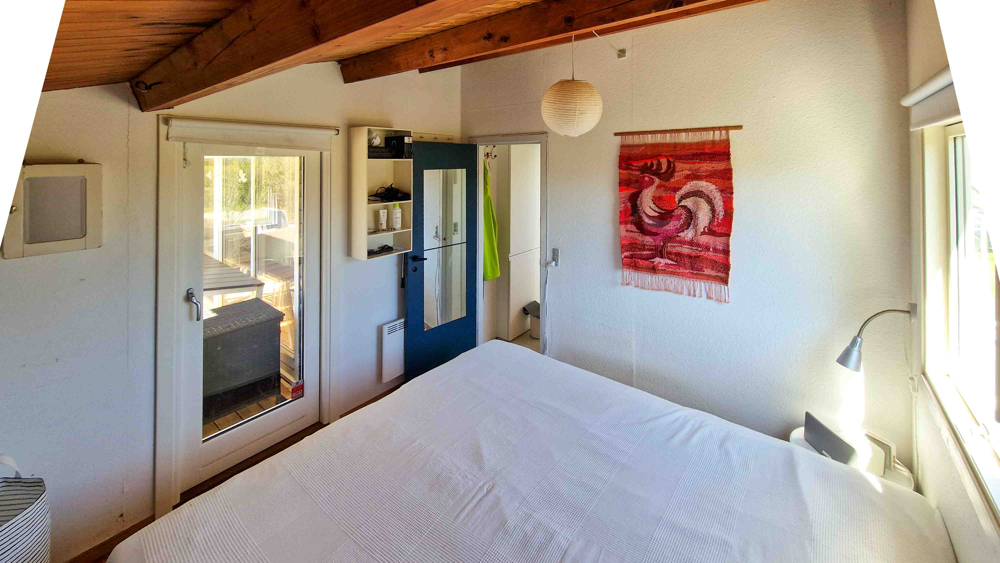

Beliggenhed
Klinten 2 –
præcis her
Ca. 90–100 minutter fra Indre By via motorvejen mod Kalundborg. Ingen kø, ingen stress. Fredag eftermiddag – og du når solnedgangen.

Røsnæs halvøen — huset markeret

Lokalområdet — lukket vejnet op til fredede arealer
I nærheden
Dyrehøj Vingård
Smagninger, vine og café. Få minutters kørsel.
Golfbane
18 huller i naturskønt terræn på halvøen.
Strand & badebro
Smuk tur ned ad kystlandskabet. Fælles bro.
Røsnæs Fyr
Vandreture, klinter og dramatisk kystlinje.